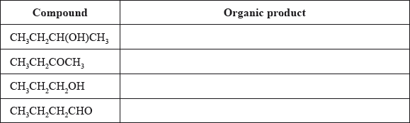
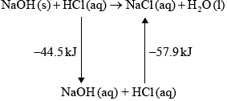
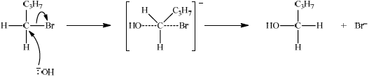
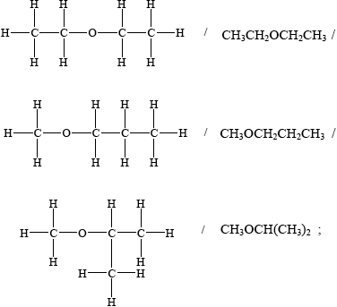
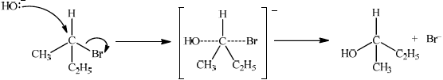
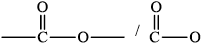
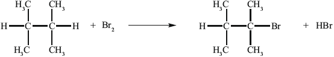
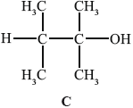

SL Paper 2
Consider the following list of organic compounds.
Compound 1: \({\text{C}}{{\text{H}}_{\text{3}}}{\text{C}}{{\text{H}}_{\text{2}}}{\text{CH(OH)C}}{{\text{H}}_{\text{3}}}\)
Compound 2: \({\text{C}}{{\text{H}}_{\text{3}}}{\text{C}}{{\text{H}}_{\text{2}}}{\text{COC}}{{\text{H}}_{\text{3}}}\)
Compound 3: \({\text{C}}{{\text{H}}_{\text{3}}}{\text{C}}{{\text{H}}_{\text{2}}}{\text{C}}{{\text{H}}_{\text{2}}}{\text{OH}}\)
Compound 4: \({\text{C}}{{\text{H}}_{\text{3}}}{\text{C}}{{\text{H}}_{\text{2}}}{\text{C}}{{\text{H}}_{\text{2}}}{\text{CHO}}\)
Hydrochloric acid neutralizes sodium hydroxide, forming sodium chloride and water.
\({\text{NaOH(aq)}} + {\text{HCl(aq)}} \to {\text{NaCl(aq)}} + {{\text{H}}_{\text{2}}}{\text{O(l)}}\) \(\Delta {H^\Theta } = -57.9{\text{ kJ}}\,{\text{mo}}{{\text{l}}^{ - 1}}\)
Apply IUPAC rules to state the name of compound 1.
(i) Define the term structural isomers.
(ii) Identify the two compounds in the list that are structural isomers of each other.
Determine the organic product formed when each of the compounds is heated under reflux with excess acidified potassium dichromate(VI). If no reaction occurs write NO REACTION in the table.

Explain the mechanism for the substitution reaction of bromoethane with sodium hydroxide. Use curly arrows to represent the movement of electron pairs.
(i) Define the term standard enthalpy change of reaction, \(\Delta {H^\Theta }\).
(ii) Determine the amount of energy released, in kJ, when \({\text{50.0 c}}{{\text{m}}^{\text{3}}}\) of \({\text{1.00 mol}}\,{\text{d}}{{\text{m}}^{ - 3}}\) sodium hydroxide solution reacts with \({\text{50.0 c}}{{\text{m}}^{\text{3}}}\) of \({\text{1.00 mol}}\,{\text{d}}{{\text{m}}^{ - 3}}\) hydrochloric acid solution.
(iii) In an experiment, 2.50 g of solid sodium hydroxide was dissolved in \({\text{50.0 c}}{{\text{m}}^{\text{3}}}\) of water. The temperature rose by 13.3 °C. Calculate the standard enthalpy change, in \({\text{kJ}}\,{\text{mo}}{{\text{l}}^{ - 1}}\), for dissolving one mole of solid sodium hydroxide in water.
\[{\text{NaOH(s)}} \to {\text{NaOH(aq)}}\]
(iv) Using relevant data from previous question parts, determine \(\Delta {H^\Theta }\), in \({\text{kJ}}\,{\text{mo}}{{\text{l}}^{ - 1}}\), for the reaction of solid sodium hydroxide with hydrochloric acid.
\[{\text{NaOH(s)}} + {\text{HCl(aq)}} \to {\text{NaCl(aq)}} + {{\text{H}}_{\text{2}}}{\text{O(l)}}\]
Markscheme
butan-2-ol/2-butanol;
(i) same molecular formula but differ in arrangement of their atoms;
Allow “different structures/structural formulas” instead of “different arrangement of atoms”.
(ii) (compounds) 2 and 4 / butanone and butanal;


curly arrow going from lone pair/negative charge on O in \({\text{H}}{{\text{O}}^ - }\) to C;
Do not allow curly arrow originating on H in HO–.
curly arrow showing Br leaving;
Accept curly arrow either going from bond between C and Br to Br in bromoethane or in the transition state.
representation of transition state showing negative charge, square brackets and partial bonds;
Do not penalize if HO and Br are not at 180° to each other.
Do not award M3 if OH—C bond is represented, but penalise wrong bonding once only.
formation of organic product \({\text{C}}{{\text{H}}_3}{\text{C}}{{\text{H}}_2}{\text{OH}}\) and \({\text{B}}{{\text{r}}^ - }\);
Accept “NaBr / Na+ and Br–” as product.
If candidate writes an SN1 mechanism then deduct 1 mark for this, so that it is marked out of [3 max].
(i) heat transferred/absorbed/released/enthalpy/potential energy change when 1 mol/molar amounts of reactant(s) react (to form products) / OWTTE;
under standard conditions / at a pressure 100 kPa/101.3 kPa/1 atm and temperature 298 K/25 °C;
Award [2] for difference between standard enthalpies of products and standard enthalpies of reactants / \({H^\Theta }\) (products) – \({H^\Theta }\) (reactants).
Award [2] for difference between standard enthalpies of formation of products and standard enthalpies of formation of reactants / \(\Sigma \Delta H_f^\Theta \) (products) – \(\Sigma \Delta H_f^\Theta \) (reactants).
(ii) \((1.00 \times 0.0500 = ){\text{ }}0.0500{\text{ (mol)}}\);
\((0.0500 \times 57.9 = ){\text{ }}2.90{\text{ (kJ)}}\);
Ignore any negative sign.
Award [2] for correct final answer.
Award [1 max] for 2900 J.
(iii) \(\left( {\frac{{2.50}}{{40.00}} = } \right){\text{ }}0.0625{\text{ (mol NaOH)}}\);
\(0.0500 \times 4.18 \times 13.3 = 2.78{\text{ (kJ)}}/50.0 \times 4.18 \times 13.3 = 2780{\text{ (J)}}\);
\(\left( {\frac{{2.78}}{{0.0625}}} \right) = - 44.5{\text{ }}({\text{kJ}}\,{\text{mo}}{{\text{l}}^{ - 1}})\);
Award [3] for correct final answer.
Negative sign is necessary for M3.
Award M2 and M3 if 52.5 g is used to obtain an enthalpy change of –46.7.
(iv) –44.5 – 57.9 / correct Hess’s Law cycle (as below) / correct manipulation of equations;

–102.4 (kJ);
Award [2] for correct final answer.
Examiners report
Most students scored well on naming the required compound from its formula in Part (a), likewise defining structural isomers and recognising compounds related in the way, required in Part (b), were rarely a challenge. In Part (c) students could usually identify whether compounds underwent oxidation and the products formed, with the most common mistake being to fail to notice that there was excess dichromate(VI) in the case of the primary alcohol. The mechanism required in Part (d) seemed to be known to many, though many candidates continue to lose marks through a lack of precision about the start and finish points of curly arrows. Many students gained at least one mark for the definition standard enthalpy change in the first section of Part (e), though few displayed the precision required for both marks. In the second section quite a few tried to solve the enthalpy problem by calorimetry rather than using the enthalpy of reaction that had been given. Generally speaking the next section, that did require calorimetry, was better done though the calculation of the amount of reagent and using the mass of liquid rather than solid for the heat evolved proved a challenge for some. Many candidates correctly combined their results, sometimes invoking Hess’ Law, in the final section, though many candidates benefited from the application of ECF.
Most students scored well on naming the required compound from its formula in Part (a), likewise defining structural isomers and recognising compounds related in the way, required in Part (b), were rarely a challenge. In Part (c) students could usually identify whether compounds underwent oxidation and the products formed, with the most common mistake being to fail to notice that there was excess dichromate(VI) in the case of the primary alcohol. The mechanism required in Part (d) seemed to be known to many, though many candidates continue to lose marks through a lack of precision about the start and finish points of curly arrows. Many students gained at least one mark for the definition standard enthalpy change in the first section of Part (e), though few displayed the precision required for both marks. In the second section quite a few tried to solve the enthalpy problem by calorimetry rather than using the enthalpy of reaction that had been given. Generally speaking the next section, that did require calorimetry, was better done though the calculation of the amount of reagent and using the mass of liquid rather than solid for the heat evolved proved a challenge for some. Many candidates correctly combined their results, sometimes invoking Hess’ Law, in the final section, though many candidates benefited from the application of ECF.
Most students scored well on naming the required compound from its formula in Part (a), likewise defining structural isomers and recognising compounds related in the way, required in Part (b), were rarely a challenge. In Part (c) students could usually identify whether compounds underwent oxidation and the products formed, with the most common mistake being to fail to notice that there was excess dichromate(VI) in the case of the primary alcohol. The mechanism required in Part (d) seemed to be known to many, though many candidates continue to lose marks through a lack of precision about the start and finish points of curly arrows. Many students gained at least one mark for the definition standard enthalpy change in the first section of Part (e), though few displayed the precision required for both marks. In the second section quite a few tried to solve the enthalpy problem by calorimetry rather than using the enthalpy of reaction that had been given. Generally speaking the next section, that did require calorimetry, was better done though the calculation of the amount of reagent and using the mass of liquid rather than solid for the heat evolved proved a challenge for some. Many candidates correctly combined their results, sometimes invoking Hess’ Law, in the final section, though many candidates benefited from the application of ECF.
Most students scored well on naming the required compound from its formula in Part (a), likewise defining structural isomers and recognising compounds related in the way, required in Part (b), were rarely a challenge. In Part (c) students could usually identify whether compounds underwent oxidation and the products formed, with the most common mistake being to fail to notice that there was excess dichromate(VI) in the case of the primary alcohol. The mechanism required in Part (d) seemed to be known to many, though many candidates continue to lose marks through a lack of precision about the start and finish points of curly arrows. Many students gained at least one mark for the definition standard enthalpy change in the first section of Part (e), though few displayed the precision required for both marks. In the second section quite a few tried to solve the enthalpy problem by calorimetry rather than using the enthalpy of reaction that had been given. Generally speaking the next section, that did require calorimetry, was better done though the calculation of the amount of reagent and using the mass of liquid rather than solid for the heat evolved proved a challenge for some. Many candidates correctly combined their results, sometimes invoking Hess’ Law, in the final section, though many candidates benefited from the application of ECF.
Most students scored well on naming the required compound from its formula in Part (a), likewise defining structural isomers and recognising compounds related in the way, required in Part (b), were rarely a challenge. In Part (c) students could usually identify whether compounds underwent oxidation and the products formed, with the most common mistake being to fail to notice that there was excess dichromate(VI) in the case of the primary alcohol. The mechanism required in Part (d) seemed to be known to many, though many candidates continue to lose marks through a lack of precision about the start and finish points of curly arrows. Many students gained at least one mark for the definition standard enthalpy change in the first section of Part (e), though few displayed the precision required for both marks. In the second section quite a few tried to solve the enthalpy problem by calorimetry rather than using the enthalpy of reaction that had been given. Generally speaking the next section, that did require calorimetry, was better done though the calculation of the amount of reagent and using the mass of liquid rather than solid for the heat evolved proved a challenge for some. Many candidates correctly combined their results, sometimes invoking Hess’ Law, in the final section, though many candidates benefited from the application of ECF.
\({\text{25.0 c}}{{\text{m}}^{\text{3}}}\) of \({\text{0.200 mol}}\,{\text{d}}{{\text{m}}^{ - 3}}\) ethanoic acid were added to \({\text{30.0 c}}{{\text{m}}^{\text{3}}}\) of a \({\text{0.150 mol}}\,{\text{d}}{{\text{m}}^{ - 3}}\) sodium hydrogencarbonate solution, \({\text{NaHC}}{{\text{O}}_{\text{3}}}{\text{(aq)}}\).
The molar mass of a volatile organic liquid, X, can be determined experimentally by allowing it to vaporize completely at a controlled temperature and pressure. 0.348 g of X was injected into a gas syringe maintained at a temperature of 90 °C and a pressure of \(1.01 \times {10^5}{\text{ Pa}}\). Once it had reached equilibrium, the gas volume was measured as \({\text{95.0 c}}{{\text{m}}^{\text{3}}}\).
Bromoethane, \({\text{C}}{{\text{H}}_{\text{3}}}{\text{C}}{{\text{H}}_{\text{2}}}{\text{Br}}\), undergoes a substitution reaction to form ethanol, \({\text{C}}{{\text{H}}_{\text{3}}}{\text{C}}{{\text{H}}_{\text{2}}}{\text{OH}}\).
Outline how electrical conductivity can be used to distinguish between a \({\text{0.200 mol}}\,{\text{d}}{{\text{m}}^{ - 3}}\) solution of ethanoic acid, \({\text{C}}{{\text{H}}_{\text{3}}}{\text{COOH}}\), and a \({\text{0.200 mol}}\,{\text{d}}{{\text{m}}^{ - 3}}\) solution of hydrochloric acid, HCl.
(i) State an equation for the reaction of ethanoic acid with a solution of sodium hydrogencarbonate.
(ii) Determine which is the limiting reagent. Show your working.
(iii) Calculate the mass, in g, of carbon dioxide produced.
(i) Determine the amount, in mol, of X in the gas syringe.
(ii) Calculate the molar mass of X.
(i) Identify the reagent necessary for this reaction to occur.
(ii) Deduce the mechanism for the reaction using equations and curly arrows to represent the movement of electron pairs.
Determine the enthalpy change, in kJ mol\(^{ - 1}\), for this reaction, using Table 10 of the Data Booklet.
Bromoethene, \({\text{C}}{{\text{H}}_{\text{2}}}{\text{CHBr}}\), can undergo polymerization. Draw a section of this polymer that contains six carbon atoms.
Markscheme
HCl is a strong acid and \({\text{C}}{{\text{H}}_3}{\text{COOH}}\) is a weak acid so HCl has higher conductivity / HCl dissociates completely in water and \({\text{C}}{{\text{H}}_3}{\text{COOH}}\) does not, so HCl has higher conductivity / HCl is stronger acid (than \({\text{C}}{{\text{H}}_{\text{3}}}{\text{COOH}}\)) so has higher \({\text{[}}{{\text{H}}^ + }{\text{]}}\) and higher conductivity;
(i) \({\text{C}}{{\text{H}}_3}{\text{COOH(aq)}} + {\text{HCO}}_3^ - {\text{(aq)}} \to {\text{C}}{{\text{H}}_3}{\text{CO}}{{\text{O}}^ - }{\text{(aq)}} + {{\text{H}}_2}{\text{O(l)}} + {\text{C}}{{\text{O}}_2}{\text{(g)}}\);
Accept NaHCO3(aq) and CH3COONa (aq) instead of ions.
Ignore state symbols.
(ii) \(n{\text{(C}}{{\text{H}}_3}{\text{COOH)}} = 0.00500{\text{ (mol)}}\) and \(n{\text{(NaHC}}{{\text{O}}_3}{\text{)}} = 0.00450{\text{ (mol)}}\);
\({\text{NaHC}}{{\text{O}}_3}\) is limiting;
(iii) \(n{\text{(C}}{{\text{O}}_2}{\text{)}} = n{\text{(NaHC}}{{\text{O}}_3}{\text{)}} = 0.00450{\text{ (mol)}}\);
\(m{\text{(C}}{{\text{O}}_2}{\text{)}} = 0.00450 \times 44.01 = 0.198{\text{ (g)}}\);
Award [2] for correct final answer.
(i) \(T = 363{\text{ K}}\) and \(V = 9.50 \times {10^{ - 5}}{\text{ }}{{\text{m}}^3}\);
Accept V = 9.5 \( \times \) 10–2 dm3 if P is used as 101 kPa in calculation.
\(n = \frac{{PV}}{{RT}} = \frac{{1.01 \times {{10}^5} \times 9.50 \times {{10}^{ - 5}}}}{{8.31 \times 363}}\);
\( = 3.18 \times {10^{ - 3}}{\text{ (mol)}}\);
Award [3] for correct final answer.
(ii) \(M = \left( {\frac{m}{n} = \frac{{0.348}}{{3.18 \times {{10}^{ - 3}}}} = } \right)109{\text{ }}({\text{g}}\,{\text{mo}}{{\text{l}}^{ - 1}})\);
(i) (dilute aqueous) NaOH/sodium hydroxide / KOH/potassium hydroxide;
Do not accept hydroxide/OH–.
(ii) 
curly arrow going from lone pair/negative charge on O in HO– to C;
Do not allow curly arrow originating on H in HO–.
curly arrow showing Br leaving;
Accept curly arrow either going from bond between C and Br to Br in bromoethane or in the transition state.
representation of transition state showing negative charge, square brackets and partial bonds;
Do not penalize if HO and Br are not at 180° to each other.
Do not award M3 if OH—C bond is represented.
bonds broken:
1(C=C) \( + 1\) (H–Br) / \((612 + 366 = )978{\text{ (kJ)}}\);
Accept 2630 (kJ).
bonds formed:
1(C–C) \( + 1\) (C–H) \( + 1\) (C–Br) / \((1 \times 347 + 1 \times 413 + 1 \times 290 = )1050{\text{ (kJ)}}\);
Accept 2702 (kJ).
\(\Delta H = - 72{\text{ }}({\text{kJ}}\,{\text{mo}}{{\text{l}}^{ - 1}})\);
Award [3] for correct final answer.
Award [2 max] for +72 (kJ mol−1).
 ;
;
Extension bonds required.
Ignore brackets and n.
Examiners report
Question 7 was answered by relatively few candidates, and those who chose this question were usually not well-prepared. In (a) very few candidates indicated that HCl is a strong acid and \({\text{C}}{{\text{H}}_{\text{3}}}{\text{COOH}}\) a weak one. Many candidates seemed unfamiliar with the distinction between state and outline and simply said that HCl would be a better conductor. In (b)(i) very few candidates could state a correct equation for the reaction between ethanoic acid and sodium hydrogencarbonate, even when the formulas were provided, but most could calculate the limiting reagent in (b)(ii) and the mass of \({\text{C}}{{\text{O}}_{\text{2}}}\) produced in (b)(iii). Part (c) gave details of a volatile organic liquid. Most candidates could calculate the moles of gas present in (c)(i), although the conversion to the correct units for pressure and volume gave many problems. The calculation of the molar mass of the gas, especially with ECF applied, was generally done well by the candidates. Part (d) referred to the substitution reaction of bromoethane to form ethanol. Identifying the reagent in (d)(i) for this reaction caused problems, with many stating \({\text{O}}{{\text{H}}^ - }\) as the reagent instead of NaOH or KOH. Only the best candidates could draw the mechanism for this substitution reaction in (d)(ii). Many candidates seemed to have very little idea of how to represent an \({{\text{S}}_{\text{N}}}{\text{2}}\) mechanism. Although most candidates identified HBr as the reagent which could produce bromoethane from ethene, they often gave UV as the required condition in (e)(i). Teachers should note that assessment statement 10.6.1 indicates that reagents, conditions and equations should be included for all reaction types listed in the syllabus. Calculation of the enthalpy change using bond enthalpies did not give problems to the good candidates in (e)(ii) but many of the weaker candidates failed to identify all the bonds broken and formed, and only scored the final mark through the application of ECF. Drawing a section of a polymer produced from bromoethene in (e)(iii) presented few problems for most candidates.
Question 7 was answered by relatively few candidates, and those who chose this question were usually not well-prepared. In (a) very few candidates indicated that HCl is a strong acid and \({\text{C}}{{\text{H}}_{\text{3}}}{\text{COOH}}\) a weak one. Many candidates seemed unfamiliar with the distinction between state and outline and simply said that HCl would be a better conductor. In (b)(i) very few candidates could state a correct equation for the reaction between ethanoic acid and sodium hydrogencarbonate, even when the formulas were provided, but most could calculate the limiting reagent in (b)(ii) and the mass of \({\text{C}}{{\text{O}}_{\text{2}}}\) produced in (b)(iii). Part (c) gave details of a volatile organic liquid. Most candidates could calculate the moles of gas present in (c)(i), although the conversion to the correct units for pressure and volume gave many problems. The calculation of the molar mass of the gas, especially with ECF applied, was generally done well by the candidates. Part (d) referred to the substitution reaction of bromoethane to form ethanol. Identifying the reagent in (d)(i) for this reaction caused problems, with many stating \({\text{O}}{{\text{H}}^ - }\) as the reagent instead of NaOH or KOH. Only the best candidates could draw the mechanism for this substitution reaction in (d)(ii). Many candidates seemed to have very little idea of how to represent an \({{\text{S}}_{\text{N}}}{\text{2}}\) mechanism. Although most candidates identified HBr as the reagent which could produce bromoethane from ethene, they often gave UV as the required condition in (e)(i). Teachers should note that assessment statement 10.6.1 indicates that reagents, conditions and equations should be included for all reaction types listed in the syllabus. Calculation of the enthalpy change using bond enthalpies did not give problems to the good candidates in (e)(ii) but many of the weaker candidates failed to identify all the bonds broken and formed, and only scored the final mark through the application of ECF. Drawing a section of a polymer produced from bromoethene in (e)(iii) presented few problems for most candidates.
Question 7 was answered by relatively few candidates, and those who chose this question were usually not well-prepared. In (a) very few candidates indicated that HCl is a strong acid and \({\text{C}}{{\text{H}}_{\text{3}}}{\text{COOH}}\) a weak one. Many candidates seemed unfamiliar with the distinction between state and outline and simply said that HCl would be a better conductor. In (b)(i) very few candidates could state a correct equation for the reaction between ethanoic acid and sodium hydrogencarbonate, even when the formulas were provided, but most could calculate the limiting reagent in (b)(ii) and the mass of \({\text{C}}{{\text{O}}_{\text{2}}}\) produced in (b)(iii). Part (c) gave details of a volatile organic liquid. Most candidates could calculate the moles of gas present in (c)(i), although the conversion to the correct units for pressure and volume gave many problems. The calculation of the molar mass of the gas, especially with ECF applied, was generally done well by the candidates. Part (d) referred to the substitution reaction of bromoethane to form ethanol. Identifying the reagent in (d)(i) for this reaction caused problems, with many stating \({\text{O}}{{\text{H}}^ - }\) as the reagent instead of NaOH or KOH. Only the best candidates could draw the mechanism for this substitution reaction in (d)(ii). Many candidates seemed to have very little idea of how to represent an \({{\text{S}}_{\text{N}}}{\text{2}}\) mechanism. Although most candidates identified HBr as the reagent which could produce bromoethane from ethene, they often gave UV as the required condition in (e)(i). Teachers should note that assessment statement 10.6.1 indicates that reagents, conditions and equations should be included for all reaction types listed in the syllabus. Calculation of the enthalpy change using bond enthalpies did not give problems to the good candidates in (e)(ii) but many of the weaker candidates failed to identify all the bonds broken and formed, and only scored the final mark through the application of ECF. Drawing a section of a polymer produced from bromoethene in (e)(iii) presented few problems for most candidates.
Question 7 was answered by relatively few candidates, and those who chose this question were usually not well-prepared. In (a) very few candidates indicated that HCl is a strong acid and \({\text{C}}{{\text{H}}_{\text{3}}}{\text{COOH}}\) a weak one. Many candidates seemed unfamiliar with the distinction between state and outline and simply said that HCl would be a better conductor. In (b)(i) very few candidates could state a correct equation for the reaction between ethanoic acid and sodium hydrogencarbonate, even when the formulas were provided, but most could calculate the limiting reagent in (b)(ii) and the mass of \({\text{C}}{{\text{O}}_{\text{2}}}\) produced in (b)(iii). Part (c) gave details of a volatile organic liquid. Most candidates could calculate the moles of gas present in (c)(i), although the conversion to the correct units for pressure and volume gave many problems. The calculation of the molar mass of the gas, especially with ECF applied, was generally done well by the candidates. Part (d) referred to the substitution reaction of bromoethane to form ethanol. Identifying the reagent in (d)(i) for this reaction caused problems, with many stating \({\text{O}}{{\text{H}}^ - }\) as the reagent instead of NaOH or KOH. Only the best candidates could draw the mechanism for this substitution reaction in (d)(ii). Many candidates seemed to have very little idea of how to represent an \({{\text{S}}_{\text{N}}}{\text{2}}\) mechanism. Although most candidates identified HBr as the reagent which could produce bromoethane from ethene, they often gave UV as the required condition in (e)(i). Teachers should note that assessment statement 10.6.1 indicates that reagents, conditions and equations should be included for all reaction types listed in the syllabus. Calculation of the enthalpy change using bond enthalpies did not give problems to the good candidates in (e)(ii) but many of the weaker candidates failed to identify all the bonds broken and formed, and only scored the final mark through the application of ECF. Drawing a section of a polymer produced from bromoethene in (e)(iii) presented few problems for most candidates.
Question 7 was answered by relatively few candidates, and those who chose this question were usually not well-prepared. In (a) very few candidates indicated that HCl is a strong acid and \({\text{C}}{{\text{H}}_{\text{3}}}{\text{COOH}}\) a weak one. Many candidates seemed unfamiliar with the distinction between state and outline and simply said that HCl would be a better conductor. In (b)(i) very few candidates could state a correct equation for the reaction between ethanoic acid and sodium hydrogencarbonate, even when the formulas were provided, but most could calculate the limiting reagent in (b)(ii) and the mass of \({\text{C}}{{\text{O}}_{\text{2}}}\) produced in (b)(iii). Part (c) gave details of a volatile organic liquid. Most candidates could calculate the moles of gas present in (c)(i), although the conversion to the correct units for pressure and volume gave many problems. The calculation of the molar mass of the gas, especially with ECF applied, was generally done well by the candidates. Part (d) referred to the substitution reaction of bromoethane to form ethanol. Identifying the reagent in (d)(i) for this reaction caused problems, with many stating \({\text{O}}{{\text{H}}^ - }\) as the reagent instead of NaOH or KOH. Only the best candidates could draw the mechanism for this substitution reaction in (d)(ii). Many candidates seemed to have very little idea of how to represent an \({{\text{S}}_{\text{N}}}{\text{2}}\) mechanism. Although most candidates identified HBr as the reagent which could produce bromoethane from ethene, they often gave UV as the required condition in (e)(i). Teachers should note that assessment statement 10.6.1 indicates that reagents, conditions and equations should be included for all reaction types listed in the syllabus. Calculation of the enthalpy change using bond enthalpies did not give problems to the good candidates in (e)(ii) but many of the weaker candidates failed to identify all the bonds broken and formed, and only scored the final mark through the application of ECF. Drawing a section of a polymer produced from bromoethene in (e)(iii) presented few problems for most candidates.
Question 7 was answered by relatively few candidates, and those who chose this question were usually not well-prepared. In (a) very few candidates indicated that HCl is a strong acid and \({\text{C}}{{\text{H}}_{\text{3}}}{\text{COOH}}\) a weak one. Many candidates seemed unfamiliar with the distinction between state and outline and simply said that HCl would be a better conductor. In (b)(i) very few candidates could state a correct equation for the reaction between ethanoic acid and sodium hydrogencarbonate, even when the formulas were provided, but most could calculate the limiting reagent in (b)(ii) and the mass of \({\text{C}}{{\text{O}}_{\text{2}}}\) produced in (b)(iii). Part (c) gave details of a volatile organic liquid. Most candidates could calculate the moles of gas present in (c)(i), although the conversion to the correct units for pressure and volume gave many problems. The calculation of the molar mass of the gas, especially with ECF applied, was generally done well by the candidates. Part (d) referred to the substitution reaction of bromoethane to form ethanol. Identifying the reagent in (d)(i) for this reaction caused problems, with many stating \({\text{O}}{{\text{H}}^ - }\) as the reagent instead of NaOH or KOH. Only the best candidates could draw the mechanism for this substitution reaction in (d)(ii). Many candidates seemed to have very little idea of how to represent an \({{\text{S}}_{\text{N}}}{\text{2}}\) mechanism. Although most candidates identified HBr as the reagent which could produce bromoethane from ethene, they often gave UV as the required condition in (e)(i). Teachers should note that assessment statement 10.6.1 indicates that reagents, conditions and equations should be included for all reaction types listed in the syllabus. Calculation of the enthalpy change using bond enthalpies did not give problems to the good candidates in (e)(ii) but many of the weaker candidates failed to identify all the bonds broken and formed, and only scored the final mark through the application of ECF. Drawing a section of a polymer produced from bromoethene in (e)(iii) presented few problems for most candidates.
Ethene belongs to the homologous series of the alkenes.
A bromoalkane, \({{\text{C}}_{\text{4}}}{{\text{H}}_{\text{9}}}{\text{Br}}\), reacts with a warm, aqueous sodium hydroxide solution, NaOH.
The time taken to produce a certain amount of product using different initial concentrations of \({{\text{C}}_{\text{4}}}{{\text{H}}_{\text{9}}}{\text{Br}}\) and NaOH is measured. The results are shown in the following table.

Outline three features of a homologous series.
Describe a test to distinguish ethene from ethane, including what is observed in each case.
Bromoethane can be produced either from ethene or from ethane. State an equation for each reaction.
State the equation for the reaction of \({{\text{C}}_{\text{4}}}{{\text{H}}_{\text{9}}}{\text{Br}}\) with NaOH.
Suggest what would happen to the pH of the solution as the reaction proceeds.
Deduce the effect of the concentration of \({{\text{C}}_{\text{4}}}{{\text{H}}_{\text{9}}}{\text{Br}}\) and NaOH on the rate of reaction.
C4H9Br:
NaOH:
Suggest why warm sodium hydroxide solution is used.
Deduce whether C4H9Br is a primary or tertiary halogenoalkane.
Determine the structural formula of C4H9Br.
Describe, using an equation, how \({{\text{C}}_{\text{4}}}{{\text{H}}_{\text{9}}}{\text{Br}}\) can be converted into \({{\text{C}}_{\text{4}}}{{\text{H}}_{\text{8}}}{\text{B}}{{\text{r}}_{\text{2}}}\).
Explain the mechanism for the reaction in (c) of \({{\text{C}}_{\text{4}}}{{\text{H}}_{\text{9}}}{\text{Br}}\) with NaOH, using curly arrows to represent the movement of electron pairs.
Markscheme
same functional group / same general formula;
difference between successive members is \({\text{C}}{{\text{H}}_{\text{2}}}\);
similar chemical properties;
Do not accept “same” chemical properties.
gradually changing physical properties;
adding bromine (water);
ethene: brown/orange to colourless / decolourizes bromine water and
ethane: does not change colour;
OR
adding acidified potassium permanganate solution/\({\text{KMn}}{{\text{O}}_{\text{4}}}{\text{(aq)}}\);
ethene: purple to colourless/brown and
ethane: does not change colour;
OR
adding Baeyer’s reagent;
ethene: purple/pink to brown and
ethane: does not change colour;
Do not accept “clear” or “transparent” for “colourless”.
\({{\text{C}}_{\text{2}}}{{\text{H}}_{\text{4}}} + {\text{HBr}} \to {{\text{C}}_{\text{2}}}{{\text{H}}_{\text{5}}}{\text{Br}}\);
\({{\text{C}}_2}{{\text{H}}_6} + {\text{B}}{{\text{r}}_2} \to {{\text{C}}_2}{{\text{H}}_5}{\text{Br}} + {\text{HBr}}\);
Accept structural formulas.
Penalise missing H atoms or incorrect bonds (such as C–HO, C–H2C) in structural formulas only once in the paper.
\({{\text{C}}_4}{{\text{H}}_9}{\text{Br}} + {\text{O}}{{\text{H}}^ - } \to {{\text{C}}_4}{{\text{H}}_9}{\text{OH}} + {\text{B}}{{\text{r}}^ - }\);
Accept NaOH in the equation.
decreases;
C4H9Br:
[C4H9Br] doubles and time halves/rate doubles / rate proportional to [C4H9Br];
Do not accept rate increases when [C4H9Br] increases.
NaOH:
[NaOH] doubles and time/rate does not change / rate independent of [NaOH];
increases rate;
Accept increases number of collisions.
rate depends on \({\text{[}}{{\text{C}}_{\text{4}}}{{\text{H}}_{\text{9}}}{\text{Br]}}\) only / rate does not depend on \({\text{[O}}{{\text{H}}^ - }{\text{]}}\) / \({{\text{S}}_{\text{N}}}{\text{1}}\) reaction /
first order reaction / if it was primary, reaction would be \({{\text{S}}_{\text{N}}}{\text{2}}\);
tertiary;
Accept ECF.
\({{\text{(C}}{{\text{H}}_{\text{3}}}{\text{)}}_{\text{3}}}{\text{CBr}}\);
Allow both condensed and full structural formula.
Accept ECF.
\({{\text{C}}_{\text{4}}}{{\text{H}}_{\text{9}}}{\text{Br}} + {\text{B}}{{\text{r}}_{\text{2}}} \to {{\text{C}}_{\text{4}}}{{\text{H}}_{\text{8}}}{\text{B}}{{\text{r}}_{\text{2}}} + {\text{HBr}}\);

curly arrow showing \({\text{B}}{{\text{r}}^ - }\) leaving;
representation of tertiary carbocation;
curly arrow going from lone pair/negative charge on O in \(^ - {\text{OH}}\) to \({{\text{C}}^ + }\);
Do not allow arrow originating on H in –OH.
formation of \({{\text{(C}}{{\text{H}}_{\text{3}}}{\text{)}}_{\text{3}}}{\text{COH}}\) and \({\text{B}}{{\text{r}}^ - }\);
Accept Br– anywhere on product side in the reaction scheme.
If primary halogenoalkane has been answered in (c)(iii) apply ECF for the mechanism:

curly arrow going from lone pair/negative charge on O in \(^ - {\text{OH}}\) to C;
Do not allow curly arrow originating on H in –OH.
curly arrow showing \({\text{B}}{{\text{r}}^ - }\) leaving;
Accept curly arrow either going from bond between C and Br to Br in bromobutane or in the transition state.
representation of transition state showing negative charge, square brackets and partial bond;
Do not penalize if HO and Br are not at 180° to each other.
Do not award M3 if OH—C bond is represented.
formation of organic product \({{\text{C}}_{\text{4}}}{{\text{H}}_{\text{9}}}{\text{OH}}\) and \({\text{B}}{{\text{r}}^ - }\);
Accept Br– anywhere on product side in the reaction scheme.
Examiners report
Students had surprisingly difficulties to name the features of a homologous series. Common mistakes were to say SAME chemical or physical properties or same empirical/molecular/structural formula.
Most candidates did well describing the test to distinguish alkanes and alkenes.
The formation of dibromobutane was a common error.
The equation for the reaction of the \({{\text{C}}_{\text{4}}}{{\text{H}}_{\text{9}}}{\text{Br}}\) with NaOH presented no problem.
Some did not realize that pH decreases as NaOH is reacting, often referring as the pH would become more neutral.
Candidates could deduce that the concentration of NaOH does not affect the rate, but could not accurately explain and quantify the relationship between the concentration of C4H9Br and the rate of reaction. Time and rate were often confused.
This was well answered.
Very few candidates could relate rate information to deduce that \({{\text{C}}_{\text{4}}}{{\text{H}}_{\text{9}}}{\text{Br}}\) was tertiary.
The structural formula was generally gained by ECF.
Students did not have problems with the equation.
Mechanism with curly arrows was done very poorly, students confused \({{\text{S}}_{\text{N}}}{\text{1}}\) and \({{\text{S}}_{\text{N}}}{\text{2}}\) mechanisms, drew arrows that did not show clearly origin and end or did not draw any arrow at all.
In an experiment to measure the enthalpy change of combustion of ethanol, a student heated a copper calorimeter containing 100 cm3 of water with a spirit lamp and collected the following data.
\[\begin{array}{*{20}{l}} {{\text{Initial temperature of water:}}}&{{\text{20.0 }}^\circ {\text{C}}} \\ {{\text{Final temperature of water:}}}&{{\text{55.0 }}^\circ {\text{C}}} \\ {{\text{Mass of ethanol burned:}}}&{{\text{1.78 g}}} \\ {{\text{Density of water:}}}&{{\text{1.00 g}}\,{\text{c}}{{\text{m}}^{ - 3}}} \end{array}\]
(i) Use the data to calculate the heat evolved when the ethanol was combusted.
(ii) Calculate the enthalpy change of combustion per mole of ethanol.
(iii) Suggest two reasons why the result is not the same as the value in the Data Booklet.
Ethanol is part of the homologous series of alcohols. Describe two features of a homologous series.
(i) Below are four structural isomers of alcohols with molecular formula \({{\text{C}}_{\text{4}}}{{\text{H}}_{{\text{10}}}}{\text{O}}\). State the name of each of the isomers a, b, c and D.

(ii) Determine the isomer that cannot be oxidized by acidifi ed potassium dichromate(VI), \({{\text{K}}_{\text{2}}}{\text{C}}{{\text{r}}_{\text{2}}}{{\text{O}}_{\text{7}}}\).
(iii) Determine the isomer which can be oxidized to butanal.
(iv) Determine the isomer which can be oxidized to butanone.
(v) Suggest the structural formula of another isomer of \({{\text{C}}_{\text{4}}}{{\text{H}}_{{\text{10}}}}{\text{O}}\).
(i) Isomer a is formed by reacting 1-bromobutane with aqueous sodium hydroxide. State whether the reaction would proceed via an SN1 or SN2 mechanism.
(ii) Explain the mechanism named in part (d) (i) using curly arrows to represent the movement of electron pairs.
Markscheme
(i) \(100 \times 4.18 \times 35.0\);
14630 J / 14600 J / 14.6 kJ;
Award [2] for correct final answer.
No ECF here if incorrect mass used.
(ii) \(\frac{{1.78}}{{46.08}} = 0.0386{\text{ mol}}\);
\(\frac{{14.6}}{{0.0386}} = ( - )378{\text{ kJ}}\,{\text{mo}}{{\text{l}}^{ - 1}}\);
Accept (–)377 and (–)379 kJ\(\,\)mol–1.
Award [2] for correct final answer.
(iii) heat loss;
incomplete combustion;
heat absorbed by calorimeter not included;
Accept other sensible suggestions.
same general formula;
same functional group;
successive members differ by CH2;
Allow methylene for CH2.
similar chemical properties;
gradually changing physical properties;
(i) A: butan-1-ol;
B: butan-2-ol;
C: (2-)methylpropan-2-ol;
D: (2-)methylpropan-1-ol;
Accept answers in the form of 1-butanol and 2-methyl-2-propanol etc.
Penalize incorrect punctuation, e.g. commas for hyphens, only once.
(ii) C/(2-)methylpropan-2-ol;
(iii) A/butan-1-ol;
(iv) B/butan-2-ol;
(v) 
(i) SN2;
(ii) 
curly arrow going from lone pair/negative charge on O in \({\text{O}}{{\text{H}}^ - }\) to C;
Do not allow curly arrow originating on H in OH–.
curly arrow showing Br leaving;
Accept curly arrow either going from bond between C and Br to Br in 1-bromobutane or in the transition state.
representation of transition state showing negative charge, square brackets and partial bonds;
Do not penalize if HO and Br are not at 180° to each other.
Do not award M3 if OH----C bond is represented.
Examiners report
This was the least popular of the Section B questions. (a) (i) was poorly answered. Many candidates had no idea and some candidates used the mass of ethanol instead of water. A few calculated correctly but failed to convert the mass of water to kg, or kJ to J, thereby ending up with the wrong unit for the answer. Only a small minority of candidates got (ii) correct. (iii) was well answered. Nearly all candidates referred to heat loss but only the better candidates were able to give a second reason.
Most candidates were able to describe two features of a homologous series in (b).
(c) was usually well done, but some candidates struggled with the structural formula of the ether isomer of \({{\text{C}}_{\text{4}}}{{\text{H}}_{{\text{10}}}}{\text{O}}\) in (v).
One G2 comment stated that the ether functional group is not listed as one of the formal functional groups in Topic 10, which is correct. However, this aspect has been asked previously on SL papers in relation to deducing specific isomers (rather than naming the ether group) and although candidates are not required to know that C-O-C is the ether functional group, there is an expectation that they should be able to deduce an isomer based on C-O-C, as this is cited explicitly in AS 4.3.2, in the teacher’s notes in relation to \({\text{C}}{{\text{H}}_{\text{3}}}{\text{OC}}{{\text{H}}_{\text{3}}}\) and \({\text{C}}{{\text{H}}_{\text{3}}}{\text{C}}{{\text{H}}_{\text{2}}}{\text{OH}}\), making this very much an objective 3 question, linking concepts across the syllabus.
SN2 was commonly given but the mechanism in (ii) was exceptionally poorly answered in this session. In particular, the transition state was rarely drawn, and clearly candidates were not prepared for organic reaction mechanisms, even though there are only a few such examples on the syllabus as a whole.
Alkenes, alcohols and esters are three families of organic compounds with many commercial uses.
Esters are often used in perfumes. Analysis of a compound containing the ester functional group only, gives a percentage composition by mass of C: 62.0% and H: 10.4%.
State the meaning of the term structural isomers.
X is an isomer of C4H8 and has the structural formula shown below.

Apply IUPAC rules to name this isomer. Deduce the structural formulas of two other isomers of C4H8.
State the balanced chemical equation for the reaction of X with HBr to form Y.
Y reacts with aqueous sodium hydroxide, NaOH(aq), to form an alcohol, Z. Identify whether Z is a primary, secondary or tertiary alcohol.
Explain one suitable mechanism for the reaction in (v) using curly arrows to represent the movement of electron pairs.
Deduce the structural formula of the organic product formed when Z is oxidized by heating under reflux with acidified potassium dichromate(VI) and state the name of the functional group of this organic product.
Draw the ester functional group.
Determine the empirical formula of the ester, showing your working.
The molar mass of the ester is \({\text{116.18 g}}\,{\text{mo}}{{\text{l}}^{ - 1}}\). Determine its molecular formula.
Markscheme
compounds with the same molecular formula but different arrangement of atoms/structural formula/structures;
Do not allow similar instead of same.
(cis-)but-2-ene / (Z)but-2-ene / but-2-ene;
Accept (cis-)2-butene / Z-2-butene.
Ignore missing hyphens.
CH3CH2CH=CH2;
H2C=C(CH3)2;
Accept either full or condensed structural formulas.
Allow structural formula of trans-but-2-ene.
(CH3)CH=CH(CH3) + HBr \( \to \) CH3CHBrCH2CH3;
Allow C4H8 + HBr \( \to \) C4H9Br.
secondary/ 2°;
Since secondary could be either SN1 or SN2 so allow SN1 or SN2 for M1–M4.
SN1:

curly arrow showing Br leaving;
Do not allow arrow originating from C to C–Br bond.
representation of secondary carbocation;
curly arrow going from lone pair/negative charge on O in HO– to C+;
Do not allow arrow originating on H in HO–.
formation of organic product CH3CH(OH)C2H5/C4H9OH and Br–;
Allow formation of NaBr instead of Br–.
OR
SN2:

curly arrow going from lone pair/negative charge on O in HO– to C;
Do not allow curly arrow originating on H in HO–.
curly arrow showing Br leaving;
Accept curly arrow either going from bond between C and Br to Br in 2-bromobutane or in the transition state.
Do not allow arrow originating from C to C–Br bond.
representation of transition state showing negative charge, square brackets and partial bonds;
Do not penalize if HO and Br are not at 180° to each other.
Do not award M3 if OH ---- C bond is represented.
formation of organic product CH3CH(OH)C2H5/C4H9OH and Br–;
Allow formation of NaBr instead of Br–.
For primary Z from (v), for ECF SN2 required.
For tertiary Z from (v), for ECF SN1 required.
But curly arrow showing Br leaving and formation of C4H9OH and Br– can be scored for either mechanism (even if incorrect type).
For primary Z from (v) with 1-bromobutane stated in (vi), correct SN2 can score full marks.
If (v) is not answered and incorrect starting reagent is given in (vi), M1, M2 and M3 may be scored but not M4 for either correct SN1 or SN2.
CH3COCH2CH3;
Full or condensed structural formula may be given.
For primary Z from (v), accept CH3CH2CH2COOH/C3H7COOH but not CH3CH2CH2CHO.
ketone / alkanone;
drawing of \({\text{RCOOR'}}\) group / 
Allow C instead of R or \(R'\).
Allow 
\((100 - 62.0 - 10.4 = ){\text{ }}27.6\% {\text{ O}}\);
\({n_C}:\left( {\frac{{62.0}}{{12.01}} = } \right){\text{ }}5.162{\text{ (mol)}}\) and \({n_H}:\left( {\frac{{10.4}}{{1.01}} = } \right){\text{ }}10.297{\text{ (mol)}}\)
and \({n_O}:\left( {\frac{{27.6}}{{16.00}} = } \right){\text{ }}1.725{\text{ (mol)}}\);
dividing 5.162 and 10.297 by 1.725 (to get values \({{\text{C}}_{{\text{2.992}}}}{{\text{H}}_{{\text{5.969}}}}{{\text{O}}_{\text{1}}}\));
(empirical formula =) \({{\text{C}}_3}{{\text{H}}_6}{\text{O}}\);
Award [4] for correct final answer if alternative method used.
Allow integer values for atomic masses (i.e. 12, 1 and 16).
C6H12O2;
Examiners report
Meaning of the term structural isomers was well defined with the weaker candidates referring to similar instead of same molecular formula but different arrangement of atoms.
Many candidates stated the IUPAC name of the isomers of C4H8 and deduced correctly the structural formulas of the two other isomers.
Most candidates were able to write the chemical equation for the reaction of the isomer of C4H8 with HBr and identify the alcohol formed by the reaction of that product with NaOH.
In part (a) (v), the mechanisms proved a problem for majority of candidates.
The use of curly arrows in reaction mechanisms continues to be poorly understood, the arrow often pointing in the wrong direction. Candidates must take care to accurately draw the position of the curly arrows illustrating the movement of electrons.
In part (b), the ester functional group was drawn correctly and it was pleasing to see that the majority of candidates handled the calculation of the empirical and molecular formulas extremely well.
In part (b), the ester functional group was drawn correctly and it was pleasing to see that the majority of candidates handled the calculation of the empirical and molecular formulas extremely well.
In part (b), the ester functional group was drawn correctly and it was pleasing to see that the majority of candidates handled the calculation of the empirical and molecular formulas extremely well.
Chloroethene, C2H3Cl, is an important organic compound used to manufacture the polymer poly(chloroethene).
Draw the Lewis structure for chloroethene and predict the H–C–Cl bond angle.
Draw a section of poly(chloroethene) containing six carbon atoms.
Outline why the polymerization of alkenes is of economic importance and why the disposal of plastics is a problem.
Chloroethene can be converted to ethanol in two steps. For each step deduce an overall equation for the reaction taking place.
Step 1:
Step 2:
State the reagents and conditions necessary to prepare ethanoic acid from ethanol in the laboratory.
State an equation, including state symbols, for the reaction of ethanoic acid with water. Identify a Brønsted-Lowry acid in the equation and its conjugate base.
Markscheme
 ;
;
Accept lines, dots or crosses for electron pairs.
Lone pairs required on chlorine.
(approximately) 120°;
Accept any bond angle in the range 113–120°.
 ;
;
Brackets not required for mark.
Continuation bonds from each carbon are required.
Cl atoms can be above or below carbon spine or alternating above and below.
plastics are cheap/versatile/a large industry / plastics have many uses / OWTTE;
plastics are not biodegradeable / plastics take up large amounts of space in landfill / pollution caused by burning of plastics / OWTTE;
Do not accept plastics cause litter.
Allow plastics don’t decompose quickly / OWTTE.
(i) Step 1:
\({\text{C}}{{\text{H}}_2}{\text{CHCl}} + {{\text{H}}_2} \to {\text{C}}{{\text{H}}_3}{\text{C}}{{\text{H}}_2}{\text{Cl}}\);
Step 2:
\({\text{C}}{{\text{H}}_3}{\text{C}}{{\text{H}}_2}{\text{Cl}} + {\text{O}}{{\text{H}}^ - } \to {\text{C}}{{\text{H}}_3}{\text{C}}{{\text{H}}_2}{\text{OH}} + {\text{C}}{{\text{l}}^ - }\);
Allow NaOH or NaCl etc. instead of OH– and Cl–.
Allow abbreviated formulas C2H3Cl, C2H5Cl, C2H5OH.
\({{\text{H}}_{\text{2}}}{\text{S}}{{\text{O}}_{\text{4}}}\)/\({{\text{H}}^ + }\)/acidified and \({\text{C}}{{\text{r}}_{\text{2}}}{\text{O}}_{_{\text{7}}}^{2 - }\)/(potassium/sodium) dichromate;
Accept suitable oxidizing agents (e.g. KMnO4 etc.) but only with acid.
Ignore missing or incorrect oxidation states in reagents.
(heat under) reflux;
Second mark can be scored even if reagent is incorrect.
\({\text{C}}{{\text{H}}_3}{\text{COOH(aq)}} + {{\text{H}}_2}{\text{O(l)}} \rightleftharpoons {\text{C}}{{\text{H}}_3}{\text{CO}}{{\text{O}}^ - }{\text{(aq)}} + {{\text{H}}_3}{{\text{O}}^ + }{\text{(aq)}}\)
OR
\({\text{C}}{{\text{H}}_3}{\text{COOH(l)}} + {{\text{H}}_2}{\text{O(l)}} \rightleftharpoons {\text{C}}{{\text{H}}_3}{\text{CO}}{{\text{O}}^ - }{\text{(aq)}} + {{\text{H}}_3}{{\text{O}}^ + }{\text{(aq)}}\)
OR
\({\text{C}}{{\text{H}}_3}{\text{COOH(aq)}} \rightleftharpoons {\text{C}}{{\text{H}}_3}{\text{CO}}{{\text{O}}^ - }{\text{(aq)}} + {{\text{H}}^ + }{\text{(aq)}}\)
correct equation;
state symbols and \( \rightleftharpoons \);
BL acid is \({\text{C}}{{\text{H}}_{\text{3}}}{\text{COOH}}\) and cb is \({\text{C}}{{\text{H}}_{\text{3}}}{\text{CO}}{{\text{O}}^ - }\) / BL acid is \({{\text{H}}_{\text{3}}}{{\text{O}}^ + }\) and cb is \({{\text{H}}_{\text{2}}}{\text{O}}\);
Examiners report
The main G2 comments on this question related to the inclusion of organic chemistry in Section A. It should be noted that ANY Topic can be asked in Section A of P2, and there is no set-formula in relation to question setting. Organic chemistry is an integral part of the IB SL Chemistry programme, and is covered in Topic 10 of the guide (12 hours in total). Hence, candidates should be adequately prepared for questions on this topic, even in Section A. In 3(a), the Lewis structure of chlorethene was generally drawn correctly, though the weaker candidates often omitted the lone pairs on the chlorine. The bond angle was usually predicted, although right angles and 109.5° were often given. Even some of the better candidates explained their choice of bond angle, based on the fact that the double bond occupies more space causing the HCCl bond angle to drop less than 120°.
Many candidates gave double bonds and some forgot to include continuation bonds.
The Aim 8 question in part (iii) was very well answered this session. Almost all candidates scored the disposal problem of plastics mark and many achieved the economics importance mark also.
In general (b) was very poorly answered, again showing a clear weakness in organic chemistry, which is an area of major concern. (i) was poorly done. Candidates who managed a correct reaction for the first step often used water instead of hydroxide ion for the second step.
In general (b) was very poorly answered, again showing a clear weakness in organic chemistry, which is an area of major concern. In (ii), candidates who mentioned dichromate(VI) or permanganate(VIII) often omitted the acid. In addition, reflux was often missing.
In general (b) was very poorly answered, again showing a clear weakness in organic chemistry, which is an area of major concern. In (iii), very few candidates scored all three marks here, even though the question itself was easy. The equation was often correct, but the equilibrium arrow was rarely given. Some candidates did not know the formula for ethanoic acid which was surprising.
Consider the following sequence of reactions.
\[{\text{RC}}{{\text{H}}_3}\xrightarrow{{reaction 1}}{\text{RC}}{{\text{H}}_2}{\text{Br}}\xrightarrow{{reaction 2}}{\text{RC}}{{\text{H}}_2}{\text{OH}}\xrightarrow{{reaction 3}}{\text{RCOOH}}\]
\({\text{RC}}{{\text{H}}_{\text{3}}}\) is an unknown alkane in which R represents an alkyl group.
The mechanism in reaction 2 is described as SN2.
Propan-1-ol has two structural isomers.
The alkane contains 81.7% by mass of carbon. Determine its empirical formula, showing your working.
Equal volumes of carbon dioxide and the unknown alkane are found to have the same mass, measured to an accuracy of two significant figures, at the same temperature and pressure. Deduce the molecular formula of the alkane.
(i) State the reagent and conditions needed for reaction 1.
(ii) State the reagent(s) and conditions needed for reaction 3.
Reaction 1 involves a free-radical mechanism. Describe the stepwise mechanism, by giving equations to represent the initiation, propagation and termination steps.
(i) State the meaning of each of the symbols in SN2.
(ii) Explain the mechanism of this reaction using curly arrows to show the movement of electron pairs, and draw the structure of the transition state.
(i) Deduce the structural formula of each isomer.
(ii) Identify the isomer from part (f) (i) which has the higher boiling point and explain your choice. Refer to both isomers in your explanation.
Markscheme
\({{\text{n}}_{\text{C}}} = \frac{{81.7}}{{12.01}} = 6.80\) and \({{\text{n}}_{\text{H}}} = \frac{{18.3}}{{1.01}} = 18.1\);
ratio of 1: 2.67 /1: 2.7;
\({{\text{C}}_3}{{\text{H}}_8}\);
No penalty for using 12 and 1.
\({{\text{C}}_{\text{3}}}{{\text{H}}_{\text{8}}}\);
(i) \({\text{B}}{{\text{r}}_2}\) /bromine;
UV/ultraviolet light;
Accept hf/hv/sunlight.
(ii) \({\text{C}}{{\text{r}}_2}{\text{O}}_7^{2 - }\) / \({\text{MnO}}_4^ - \) and acidified/\({{\text{H}}^ + }\) /\({{\text{H}}_3}{{\text{O}}^ + }\);
Accept names.
heat / reflux;
initiation:
\({\text{B}}{{\text{r}}_2} \to 2{\text{Br}} \bullet \);
propagation:
\({\text{Br}} \bullet + {\text{RC}}{{\text{H}}_3} \to {\text{HBr}} + {\text{RC}}{{\text{H}}_2} \bullet \);
\({\text{RC}}{{\text{H}}_2} \bullet + {\text{B}}{{\text{r}}_2} \to {\text{RC}}{{\text{H}}_2}{\text{Br}} + {\text{Br}} \bullet \);
termination:
\({\text{Br}} \bullet + {\text{Br}} \bullet \to {\text{B}}{{\text{r}}_2}\);
\({\text{RC}}{{\text{H}}_2} \bullet + {\text{Br}} \bullet \to {\text{RC}}{{\text{H}}_2}{\text{Br}}\);
\({\text{RC}}{{\text{H}}_2} \bullet + {\text{RC}}{{\text{H}}_2} \bullet \to {\text{RC}}{{\text{H}}_2}{\text{C}}{{\text{H}}_2}{\text{R}}\);
Award [1] for any termination step.
Accept radical with or without \( \bullet \) throughout.
Do not penalise the use of an incorrect alkane in the mechanism.
(i) substitution and nucleophilic and bimolecular/two species in rate-determining step;
Allow second order in place of bimolecular.
(ii) 
curly arrow going from lone pair/negative charge on O in OH– to C;
Do not allow curly arrow originating on H in OH–.
curly arrow showing Br leaving;
Accept curly arrow either going from bond between C and Br to Br in bromoethane or in the transition state.
representation of transition state showing negative charge, square brackets and partial bonds;
Do not penalize if HO and Br are not at 180o to each other.
Do not award M3 if OH----C bond is represented unless already penalised in M1.
Do not penalise the use of an incorrect alkyl chain in the mechanism.
(i) \({\text{C}}{{\text{H}}_3}{\text{OC}}{{\text{H}}_2}{\text{C}}{{\text{H}}_3}\);
\({\text{C}}{{\text{H}}_3}{\text{CHOHC}}{{\text{H}}_3}\);
Allow more detailed structural formulas.
(ii) \({\text{C}}{{\text{H}}_3}{\text{CHOHC}}{{\text{H}}_3}\) has higher boiling point due to hydrogen bonding;
\({\text{C}}{{\text{H}}_3}{\text{OC}}{{\text{H}}_2}{\text{C}}{{\text{H}}_3}\) has lower boiling point due to Van der Waals’/London/dispersion/dipole-dipole forces;
Hydrogen bonds in \({\text{C}}{{\text{H}}_3}{\text{CHOHC}}{{\text{H}}_3}\) are stronger;
Allow ecf if wrong structures suggested.
Examiners report
This was the least popular question in Section B but there was a generally pleasing level of performance. Most candidates scored at least 2 out of 3 marks for calculating the empirical formula. Several candidates correctly worked out the ratio but then rounded 2.7 to 3 to give an incorrect empirical formula of \({\text{C}}{{\text{H}}_{\text{3}}}\) instead of \({{\text{C}}_{\text{3}}}{{\text{H}}_{\text{8}}}\).
Many did manage to calculate a correct molecular formula even though their empirical formula was incorrect.
Free radical substitution was well known, however, there was some confusion about whether the reagent was supposed to be Br2(g), Br2(aq) or Br2 in CCl4. Most stated that UV was required.
In 5(d) most candidates scored at least 3 marks out of 4. A few used Cl2 instead of Br2.
Most knew the meaning of the symbols SN2, however, a few did not correctly state the meaning of the 2. The mechanism caused some problems and some of the common errors here were drawing the curly arrow from the H; forgetting to include any curly arrow to show Br leaving; writing the partial bond from the nucleophile as OH---C; or missing the negative charge from the transition state. Unfortunately, most candidates had a combination of these errors. Also, in most cases the partial bonds were drawn at angles less than 180 degrees which, although not penalised, is totally incorrect as attack by the nucleophile must be on the opposite side to the halogen leaving.
Part (f) proved to be very confusing for many candidates. The structural isomers of propan-1-ol were commonly drawn as propan-1-ol and propan-2-ol, which then caused enormous difficulties in 5(f)(ii) when they had to identify the isomer with the higher boiling point.
Those who were relying on ECF marks here often predicted the wrong isomer or found it very difficult to explain their prediction. The few candidates who drew the isomers correctly as an ether and an alcohol were generally able to score full marks by predicting and explaining the different boiling points.
Alkenes, such as A (shown below), are important intermediates in the petrochemical industry because they undergo addition reactions to produce a wide variety of products, such as the conversion shown below.

Another way to make B is the reaction shown below.

B can be converted into C.

In the gas phase, A reacts with hydrogen to form D.

Applying IUPAC rules, state the name of A.
State the reagent required to convert A into B.
(i) State the conditions required for this reaction to occur.
(ii) Outline why it would give a poor yield of the desired product.
(i) State the reagent required.
(ii) Explain the mechanism of this reaction, using curly arrows to represent the movement of electron pairs.
A can also be converted into C without going via B. State the reagent and conditions required.
(i) State why C is not readily oxidized by acidified potassium dichromate(VI).
(ii) Deduce the structural formula of an isomer of C that could be oxidized to a carboxylic acid by this reagent.
State the conditions required for this reaction to occur.
State the homologous series to which D belongs.
Determine the enthalpy change, in \({\text{kJ}}\,{\text{mo}}{{\text{l}}^{ - 1}}\), for the reaction of A with hydrogen, using Table 10 of the Data Booklet, and state whether the reaction is exothermic or endothermic.
The standard enthalpy change of combustion of A is \( - 4000{\text{ kJ}}\,{\text{mo}}{{\text{l}}^{ - 1}}\). Calculate the amount of A, in mol, that would have to be burned to raise the temperature of \({\text{1 d}}{{\text{m}}^{\text{3}}}\) of water from 20 °C to 100 °C.
Markscheme
2,3-dimethylbut-2-ene;
Ignore punctuation.
hydrogen bromide / hydrobromic acid / HBr;
(i) ultraviolet light/sunlight;
Accept “very high temperature”.
(ii) random/further/multiple substitution (so low probability of desired product) / would give a mixture of many different products / OWTTE;
(i) (aqueous) sodium hydroxide/NaOH / potassium hydroxide/KOH;
Accept hydroxide ion/OH–.
(ii) 
\({S_N}1\):
curly arrow from C–Br bond showing Br leaving;
representation of tertiary carbocation;
curly arrow going from lone pair/negative charge on O in \({\text{H}}{{\text{O}}^ - }\) to \({{\text{C}}^ + }\);
Do not allow arrow originating on H in HO–.
Award [2] for perfect SN2 mechanism.
Award [1] for SN2 mechanism with minor mistakes.
water / steam;
heat and acid catalyst /(concentrated) \({{\text{H}}_{\text{2}}}{\text{S}}{{\text{O}}_{\text{4}}}/{{\text{H}}_{\text{3}}}{\text{P}}{{\text{O}}_{\text{4}}}\);
(i) (it is a) tertiary/3° alcohol / carbon of C–OH is not bonded to a hydrogen;
Accept “it is not a primary or secondary alcohol”.
(ii) any \({{\text{C}}_6}{{\text{H}}_{14}}{\text{O}}\) primary alcohol / \({{\text{C}}_5}{{\text{H}}_{11}}{\text{C}}{{\text{H}}_2}{\text{OH}}\);
Ni/Pt/Pd catalyst;
alkanes;
bonds broken: (E(C=C) + E(H–H) = 612 + 436 =) \({\text{1048 (kJ}}\,{\text{mo}}{{\text{l}}^{ - 1}}{\text{)}}\);
Accept (6956 + 436 =) 7392 if all bonds in alkene broken.
bonds formed: E(C–C) + 2 \( \times \) E(C–H) = 347 + (2 \( \times \) 413) = \({\text{1173 (kJ}}\,{\text{mo}}{{\text{l}}^{ - 1}}{\text{)}}\);
Accept 7517 if all the bonds in the product are summed.
\(\Delta H = 1048 - 1173/7392 - 7517 = - 125{\text{ (kJ}}\,{\text{mo}}{{\text{l}}^{ - 1}}{\text{)}}\);
Award [3] for correct final answer.
Award [2] for +125.
exothermic;
Apply ECF if sign of \(\Delta H\) incorrect.
Do not award a mark for “exothermic” if \(\Delta H\) given as positive.
energy required to heat water \(\left( { = m \times s \times \Delta T = 1 \times 4.18 \times (100 - 20)} \right) = 334.4{\text{ }}({\text{kJ}})\);
Ignore sign of energy change.
amount required \(\frac{{334.4}}{{4000}} = 0.0836{\text{ (mol)}}\);
Award [2] for correct final answer.
Examiners report
Probably the most popular and successfully answered. Most students were family with IUPAC nomenclature and realised that UV radiation is required to initiate the halogenation of an alkane, though fewer realised that the much greater probability of forming a different isomer, or the problem of polysubstitution would result in a very low yield. The conditions for the hydrolysis of the bromoalkane were well known, though fewer recognised it as a tertiary halogenoalkane and described the \({{\text{S}}_{\text{N}}}{\text{1}}\) reaction mechanism. Only a small number of candidates were able to show the electron pair originating from C–Br bond or the lone pair on the oxygen or negative charge of the hydroxide ion. Many candidates knew that tertiary alcohols could not be oxidised and correctly drew primary structures for alcohols that could be oxidised to carboxylic acids although some made careless errors and drew secondary structures or did not answer the question and proposed aldehydes. Many candidates were able to determine the enthalpy change, from bond enthalpies but some had not read the question carefully and did not address the final mark. A significant number of candidates made small errors but still gained ECF marks as they had set their working out clearly. The calculation of the amount of fuel required to raise the temperature proved more difficult with many students overlooking the volume of water and using the data to calculate the mass of the hydrocarbon that would be heated by 80 °C by the molar enthalpy of combustion and using the specific heat capacity of water.
Probably the most popular and successfully answered. Most students were family with IUPAC nomenclature and realised that UV radiation is required to initiate the halogenation of an alkane, though fewer realised that the much greater probability of forming a different isomer, or the problem of polysubstitution would result in a very low yield. The conditions for the hydrolysis of the bromoalkane were well known, though fewer recognised it as a tertiary halogenoalkane and described the \({{\text{S}}_{\text{N}}}{\text{1}}\) reaction mechanism. Only a small number of candidates were able to show the electron pair originating from C–Br bond or the lone pair on the oxygen or negative charge of the hydroxide ion. Many candidates knew that tertiary alcohols could not be oxidised and correctly drew primary structures for alcohols that could be oxidised to carboxylic acids although some made careless errors and drew secondary structures or did not answer the question and proposed aldehydes. Many candidates were able to determine the enthalpy change, from bond enthalpies but some had not read the question carefully and did not address the final mark. A significant number of candidates made small errors but still gained ECF marks as they had set their working out clearly. The calculation of the amount of fuel required to raise the temperature proved more difficult with many students overlooking the volume of water and using the data to calculate the mass of the hydrocarbon that would be heated by 80 °C by the molar enthalpy of combustion and using the specific heat capacity of water.
Probably the most popular and successfully answered. Most students were family with IUPAC nomenclature and realised that UV radiation is required to initiate the halogenation of an alkane, though fewer realised that the much greater probability of forming a different isomer, or the problem of polysubstitution would result in a very low yield. The conditions for the hydrolysis of the bromoalkane were well known, though fewer recognised it as a tertiary halogenoalkane and described the \({{\text{S}}_{\text{N}}}{\text{1}}\) reaction mechanism. Only a small number of candidates were able to show the electron pair originating from C–Br bond or the lone pair on the oxygen or negative charge of the hydroxide ion. Many candidates knew that tertiary alcohols could not be oxidised and correctly drew primary structures for alcohols that could be oxidised to carboxylic acids although some made careless errors and drew secondary structures or did not answer the question and proposed aldehydes. Many candidates were able to determine the enthalpy change, from bond enthalpies but some had not read the question carefully and did not address the final mark. A significant number of candidates made small errors but still gained ECF marks as they had set their working out clearly. The calculation of the amount of fuel required to raise the temperature proved more difficult with many students overlooking the volume of water and using the data to calculate the mass of the hydrocarbon that would be heated by 80 °C by the molar enthalpy of combustion and using the specific heat capacity of water.
Probably the most popular and successfully answered. Most students were family with IUPAC nomenclature and realised that UV radiation is required to initiate the halogenation of an alkane, though fewer realised that the much greater probability of forming a different isomer, or the problem of polysubstitution would result in a very low yield. The conditions for the hydrolysis of the bromoalkane were well known, though fewer recognised it as a tertiary halogenoalkane and described the \({{\text{S}}_{\text{N}}}{\text{1}}\) reaction mechanism. Only a small number of candidates were able to show the electron pair originating from C–Br bond or the lone pair on the oxygen or negative charge of the hydroxide ion. Many candidates knew that tertiary alcohols could not be oxidised and correctly drew primary structures for alcohols that could be oxidised to carboxylic acids although some made careless errors and drew secondary structures or did not answer the question and proposed aldehydes. Many candidates were able to determine the enthalpy change, from bond enthalpies but some had not read the question carefully and did not address the final mark. A significant number of candidates made small errors but still gained ECF marks as they had set their working out clearly. The calculation of the amount of fuel required to raise the temperature proved more difficult with many students overlooking the volume of water and using the data to calculate the mass of the hydrocarbon that would be heated by 80 °C by the molar enthalpy of combustion and using the specific heat capacity of water.
Probably the most popular and successfully answered. Most students were family with IUPAC nomenclature and realised that UV radiation is required to initiate the halogenation of an alkane, though fewer realised that the much greater probability of forming a different isomer, or the problem of polysubstitution would result in a very low yield. The conditions for the hydrolysis of the bromoalkane were well known, though fewer recognised it as a tertiary halogenoalkane and described the \({{\text{S}}_{\text{N}}}{\text{1}}\) reaction mechanism. Only a small number of candidates were able to show the electron pair originating from C–Br bond or the lone pair on the oxygen or negative charge of the hydroxide ion. Many candidates knew that tertiary alcohols could not be oxidised and correctly drew primary structures for alcohols that could be oxidised to carboxylic acids although some made careless errors and drew secondary structures or did not answer the question and proposed aldehydes. Many candidates were able to determine the enthalpy change, from bond enthalpies but some had not read the question carefully and did not address the final mark. A significant number of candidates made small errors but still gained ECF marks as they had set their working out clearly. The calculation of the amount of fuel required to raise the temperature proved more difficult with many students overlooking the volume of water and using the data to calculate the mass of the hydrocarbon that would be heated by 80 °C by the molar enthalpy of combustion and using the specific heat capacity of water.
Probably the most popular and successfully answered. Most students were family with IUPAC nomenclature and realised that UV radiation is required to initiate the halogenation of an alkane, though fewer realised that the much greater probability of forming a different isomer, or the problem of polysubstitution would result in a very low yield. The conditions for the hydrolysis of the bromoalkane were well known, though fewer recognised it as a tertiary halogenoalkane and described the \({{\text{S}}_{\text{N}}}{\text{1}}\) reaction mechanism. Only a small number of candidates were able to show the electron pair originating from C–Br bond or the lone pair on the oxygen or negative charge of the hydroxide ion. Many candidates knew that tertiary alcohols could not be oxidised and correctly drew primary structures for alcohols that could be oxidised to carboxylic acids although some made careless errors and drew secondary structures or did not answer the question and proposed aldehydes. Many candidates were able to determine the enthalpy change, from bond enthalpies but some had not read the question carefully and did not address the final mark. A significant number of candidates made small errors but still gained ECF marks as they had set their working out clearly. The calculation of the amount of fuel required to raise the temperature proved more difficult with many students overlooking the volume of water and using the data to calculate the mass of the hydrocarbon that would be heated by 80 °C by the molar enthalpy of combustion and using the specific heat capacity of water.
Probably the most popular and successfully answered. Most students were family with IUPAC nomenclature and realised that UV radiation is required to initiate the halogenation of an alkane, though fewer realised that the much greater probability of forming a different isomer, or the problem of polysubstitution would result in a very low yield. The conditions for the hydrolysis of the bromoalkane were well known, though fewer recognised it as a tertiary halogenoalkane and described the \({{\text{S}}_{\text{N}}}{\text{1}}\) reaction mechanism. Only a small number of candidates were able to show the electron pair originating from C–Br bond or the lone pair on the oxygen or negative charge of the hydroxide ion. Many candidates knew that tertiary alcohols could not be oxidised and correctly drew primary structures for alcohols that could be oxidised to carboxylic acids although some made careless errors and drew secondary structures or did not answer the question and proposed aldehydes. Many candidates were able to determine the enthalpy change, from bond enthalpies but some had not read the question carefully and did not address the final mark. A significant number of candidates made small errors but still gained ECF marks as they had set their working out clearly. The calculation of the amount of fuel required to raise the temperature proved more difficult with many students overlooking the volume of water and using the data to calculate the mass of the hydrocarbon that would be heated by 80 °C by the molar enthalpy of combustion and using the specific heat capacity of water.
Probably the most popular and successfully answered. Most students were family with IUPAC nomenclature and realised that UV radiation is required to initiate the halogenation of an alkane, though fewer realised that the much greater probability of forming a different isomer, or the problem of polysubstitution would result in a very low yield. The conditions for the hydrolysis of the bromoalkane were well known, though fewer recognised it as a tertiary halogenoalkane and described the \({{\text{S}}_{\text{N}}}{\text{1}}\) reaction mechanism. Only a small number of candidates were able to show the electron pair originating from C–Br bond or the lone pair on the oxygen or negative charge of the hydroxide ion. Many candidates knew that tertiary alcohols could not be oxidised and correctly drew primary structures for alcohols that could be oxidised to carboxylic acids although some made careless errors and drew secondary structures or did not answer the question and proposed aldehydes. Many candidates were able to determine the enthalpy change, from bond enthalpies but some had not read the question carefully and did not address the final mark. A significant number of candidates made small errors but still gained ECF marks as they had set their working out clearly. The calculation of the amount of fuel required to raise the temperature proved more difficult with many students overlooking the volume of water and using the data to calculate the mass of the hydrocarbon that would be heated by 80 °C by the molar enthalpy of combustion and using the specific heat capacity of water.
Probably the most popular and successfully answered. Most students were family with IUPAC nomenclature and realised that UV radiation is required to initiate the halogenation of an alkane, though fewer realised that the much greater probability of forming a different isomer, or the problem of polysubstitution would result in a very low yield. The conditions for the hydrolysis of the bromoalkane were well known, though fewer recognised it as a tertiary halogenoalkane and described the \({{\text{S}}_{\text{N}}}{\text{1}}\) reaction mechanism. Only a small number of candidates were able to show the electron pair originating from C–Br bond or the lone pair on the oxygen or negative charge of the hydroxide ion. Many candidates knew that tertiary alcohols could not be oxidised and correctly drew primary structures for alcohols that could be oxidised to carboxylic acids although some made careless errors and drew secondary structures or did not answer the question and proposed aldehydes. Many candidates were able to determine the enthalpy change, from bond enthalpies but some had not read the question carefully and did not address the final mark. A significant number of candidates made small errors but still gained ECF marks as they had set their working out clearly. The calculation of the amount of fuel required to raise the temperature proved more difficult with many students overlooking the volume of water and using the data to calculate the mass of the hydrocarbon that would be heated by 80 °C by the molar enthalpy of combustion and using the specific heat capacity of water.
Probably the most popular and successfully answered. Most students were family with IUPAC nomenclature and realised that UV radiation is required to initiate the halogenation of an alkane, though fewer realised that the much greater probability of forming a different isomer, or the problem of polysubstitution would result in a very low yield. The conditions for the hydrolysis of the bromoalkane were well known, though fewer recognised it as a tertiary halogenoalkane and described the \({{\text{S}}_{\text{N}}}{\text{1}}\) reaction mechanism. Only a small number of candidates were able to show the electron pair originating from C–Br bond or the lone pair on the oxygen or negative charge of the hydroxide ion. Many candidates knew that tertiary alcohols could not be oxidised and correctly drew primary structures for alcohols that could be oxidised to carboxylic acids although some made careless errors and drew secondary structures or did not answer the question and proposed aldehydes. Many candidates were able to determine the enthalpy change, from bond enthalpies but some had not read the question carefully and did not address the final mark. A significant number of candidates made small errors but still gained ECF marks as they had set their working out clearly. The calculation of the amount of fuel required to raise the temperature proved more difficult with many students overlooking the volume of water and using the data to calculate the mass of the hydrocarbon that would be heated by 80 °C by the molar enthalpy of combustion and using the specific heat capacity of water.